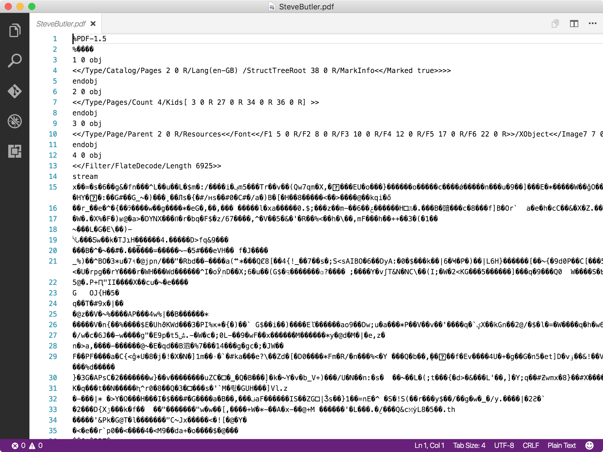

1: 2: 3: 4:
first, last, age, gender, postal Cameron, Wood, 38, Female, V0T 6G2 Edna, Conner, 42, Male, X9X 6H3 Frederick, Manning, 31, Male, V2V 6X2
1: 2: 3: 4: 5: 6:
{ first: "Cameron", last: "Wood", Age: "38", likes: ["camping", "golf"] }
1: 2: 3: 4: 5: 6: 7: 8: 9: 10: 11: 12:
<?xml version="1.0" encoding="UTF-8"?> <root> <row> <first>Cameron</first> <last>Wood</last> <age>38</age> <likes> <like>camping</like> <like>golf</like> </likes> </row> </root>
1: 2: 3: 4: 5: 6: 7: 8: 9: 10: 11:
<html> <body> <h1>Plain text is great</h1> <p>I can be read by anthing</p> <ul> <li>Portable</li> <li>Longevity</li> <li>Focus on the text</li> </ul> </body> </html>
example
1: 2: 3: 4: 5: 6: 7:
#Plain text is great I can be read by anything - Portable - Longevity - Focus on the text